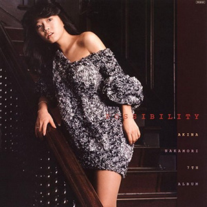

录音室专辑：第6张
发行年份：1984年
发行日期：10月10日
Side 1
| 歌名 | 作词 | 作曲 | 编曲 |
|---|---|---|---|
| サザン・ウインド | 来生えつこ | 玉置浩二 | 瀬尾一三 |
| 秋はパステルタッチ | 来生えつこ | 高中正義 | 高中正義、瀬尾一三（合唱编排） |
| October storm ―十月の嵐― | 康珍化 | 林哲司 | 萩田光雄 |
| リ・フ・レ・イ・ン | 松井五郎 | 松田良 | 萩田光雄 |
| 地平線 | 来生えつこ | 来生たかお | 萩田光雄 |
Side 2
| 歌名 | 作词 | 作曲 | 编曲 |
|---|---|---|---|
| 哀愁のMidnight | 有川正沙子 | 玉置浩二 | 萩田光雄 |
| 十戒 (1984) | 売野雅勇 | 高中正義 | 高中正義・萩田光雄 |
| 白い迷い | 来生えつこ | 来生たかお | 萩田光雄 |
| Blue Misty Rain | 有川正沙子 | 松田良 | 萩田光雄 |
| ドラマティック・エアポート | 康珍化 | 林哲司 | 萩田光雄 |
首发规格：黑胶 LP: L-12592，卡带 CT: LKF-8092
唱片公司：Reprise Records，Warner Pioneer
排行榜：Oricon公信榜LP周榜第1位（连续2周），1984年度专辑榜第18位
再发行：
1984年10月25日 - CD: 35XL-47
1985年8月25日 - CD: 32XL-105
1991年6月17日 - CD: WPCL-416
1996年4月25日 - CD: WPC6-8187
2006年6月21日 - CD、数码下载: WPCL-10282
2006年7月5日 - 数码下载
2012年8月22日 - SACD/CD: WPCL-11140
2018年6月6日 - LP: WPJL-10089
2022年12月21日 - 2CD: WPCL-13440~1